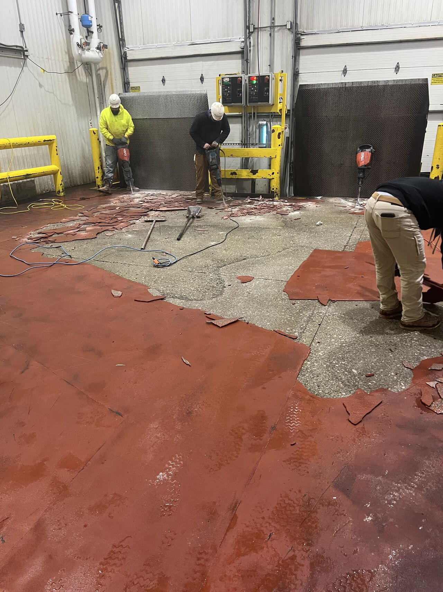
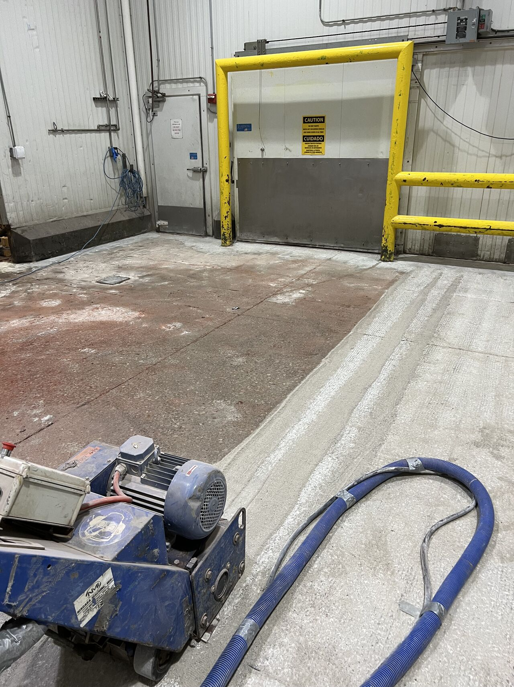
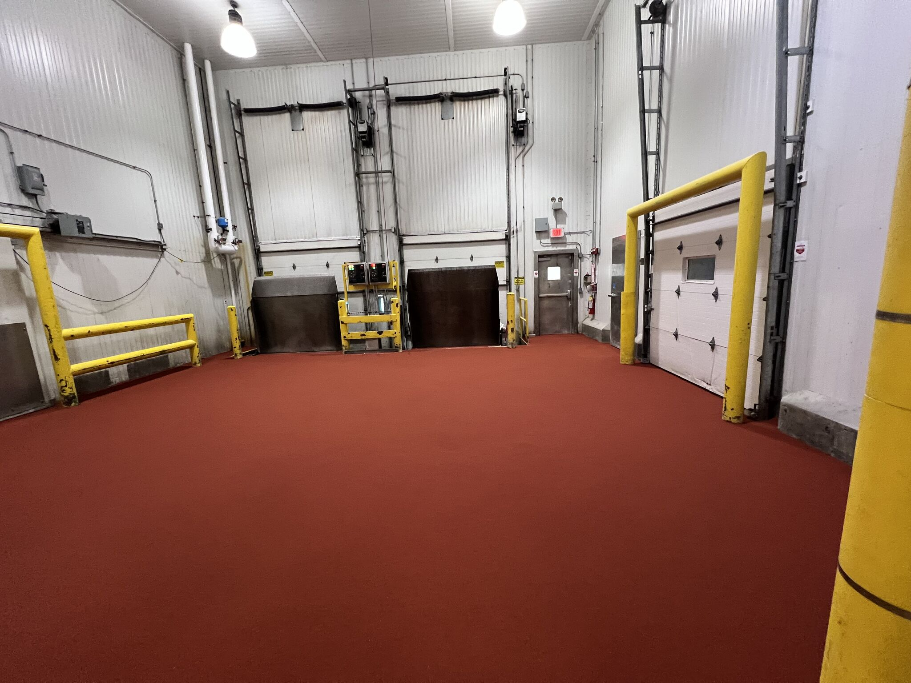

Loading docks are the most abused floors in any food processing facility. Forklifts running all day. Pallet jacks dragging across the surface. Dock levelers slamming. Temperature swings from open bay doors. And somehow, it's usually the last area anyone thinks about upgrading. Until it fails.
The Problem: Delaminated and Dangerous
This loading dock had a failed epoxy coating that was peeling up in large sheets. The delamination created trip hazards, exposed bare concrete to moisture and chemicals, and was a constant concern during USDA inspections. The facility needed a permanent fix — not another band-aid.
Surface Preparation
After removing the failed coating, we scarified the entire dock area down to clean, profiled concrete. The scarifier with HEPA-filtered vacuum ensures no dust contamination in adjacent processing areas — critical when working in an operating food facility.
Installation
Our crew installed the new flooring system across the entire dock area, including the walls around the dock levelers and bay doors. Every surface that takes abuse gets protected — not just the floor. The buckets of material you see lined up are mixed on-site and applied by hand for complete coverage.
The Finished Dock
A seamless, durable floor that handles everything a loading dock throws at it. Forklift traffic, pallet jacks, temperature swings, chemical exposure — this floor is built for all of it. No more delamination. No more trip hazards. No more inspection concerns. Just a dock that works as hard as the crew using it.